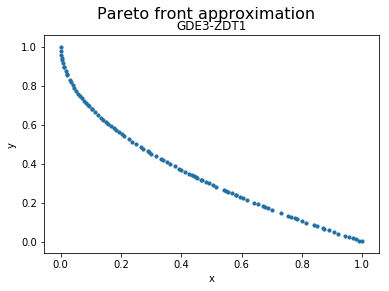

GDE3¶
Example¶
[1]:
from jmetal.algorithm.multiobjective.gde3 import GDE3
from jmetal.problem import ZDT1
from jmetal.util.termination_criterion import StoppingByEvaluations
problem = ZDT1()
max_evaluations = 25000
algorithm = GDE3(
problem=problem,
population_size=100,
cr=0.5,
f=0.5,
termination_criterion=StoppingByEvaluations(max_evaluations)
)
algorithm.run()
solutions = algorithm.get_result()
We can now visualize the Pareto front approximation:
[3]:
from jmetal.lab.visualization.plotting import Plot
from jmetal.util.solution import get_non_dominated_solutions
front = get_non_dominated_solutions(solutions)
plot_front = Plot(plot_title='Pareto front approximation', axis_labels=['x', 'y'])
plot_front.plot(front, label='GDE3-ZDT1')

API¶
-
class
jmetal.algorithm.multiobjective.gde3.GDE3(problem: jmetal.core.problem.Problem, population_size: int, cr: float, f: float, termination_criterion: jmetal.util.termination_criterion.TerminationCriterion = <jmetal.util.termination_criterion.StoppingByEvaluations object>, k: float = 0.5, population_generator: jmetal.util.generator.Generator = <jmetal.util.generator.RandomGenerator object>, population_evaluator: jmetal.util.evaluator.Evaluator = <jmetal.util.evaluator.SequentialEvaluator object>, dominance_comparator: jmetal.util.comparator.Comparator = <jmetal.util.comparator.DominanceComparator object>)[source]¶ Bases:
jmetal.core.algorithm.EvolutionaryAlgorithm-
create_initial_solutions() → List[jmetal.core.solution.FloatSolution][source]¶ Creates the initial list of solutions of a metaheuristic.
-
evaluate(solution_list: List[jmetal.core.solution.FloatSolution]) → List[jmetal.core.solution.FloatSolution][source]¶ Evaluates a solution list.
-
replacement(population: List[S], offspring_population: List[jmetal.core.solution.FloatSolution]) → List[List[jmetal.core.solution.FloatSolution]][source]¶ Replace least-fit population with new individuals.
-
reproduction(mating_pool: List[S]) → List[S][source]¶ Breed new individuals through crossover and mutation operations to give birth to offspring.
-